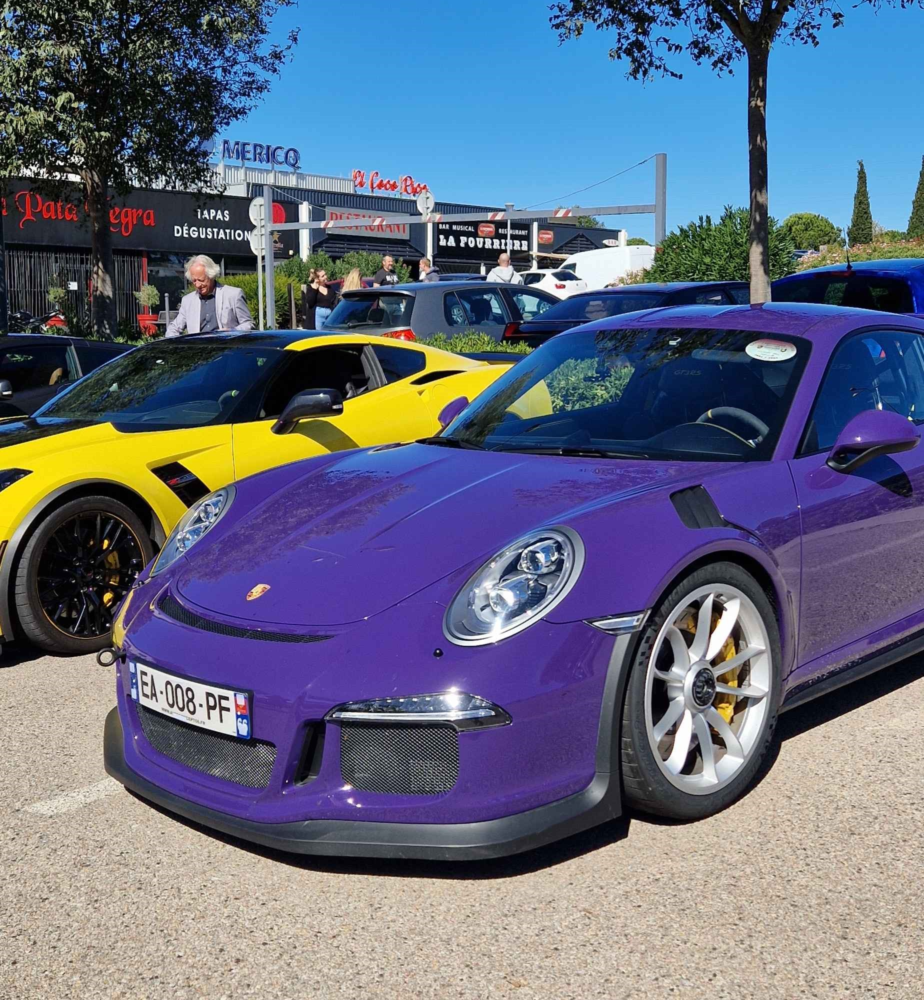

L'automobile
Puis plus tard, je découvre les voitures japonaises, les Nissan, les Subaru ou encore les Toyota d'époque. Des voitures conçus pour être modifiée et atteindre des performances hors du commun.
C'est pendant mes années de lycée que ma passion se développe le plus. Je m'intéresse à de nouvelles marques et leurs histoires en plus de me renseigner sur la mécanique. Je pense notamment à Porsche, une marque qui m'a fasciné très récemment.
J'ai commencé à collectionner des voitures miniature et à me rendre à des rassemblements automobiles pour prendre de belles photos que je poste sur mon compte Instagram dédié
La passion auto, c'est plus qu'aimer une voiture, c'est aimer son histoire, admirer le génie mécanique qui la compose. C'est apprécier de se réunir et discuter avec d'autres passionnés.
Ma galerie

Mon musée
Magic The Gathering

Il décide donc de m'amener dans une boutique dans le centre ville de Perpignan où j'achète mon premier kit de construction de deck de l'édition 2015.
J'ai toujours été fier de mes cartes, pour moi, c'est ce que m'a transmis mon père. Aujourd'hui encore, je collectionne les nouvelles éditions. Un ami à lui m'a même donner ses anciennes cartes.
Ma collection compte plusieurs milliers de cartes dont certaines qui commencent à prendre de la valeur.
prix actuel sur le marché : 76.80 €
prix actuel sur le marché : 14.53 €
prix actuel sur le marché : 8.39 €